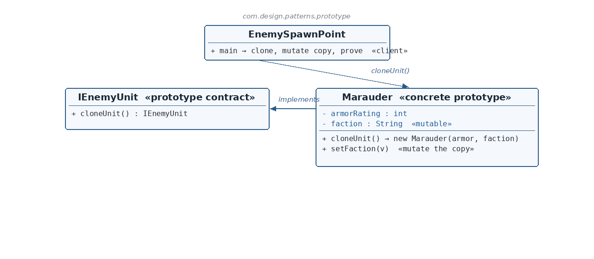

IEnemyUnit.java
☕ 4 min read · 🎬 Video walkthrough · 📊 UML diagram · 💻 Runnable code
⚡ In a nutshell — Create new objects by copying a configured prototype instead of constructing from scratch.
Create new objects by copying a configured prototype instead of constructing from scratch. The copy is a genuinely independent object — mutate it freely, and the template never changes.
A dungeon spawn point stamps out enemy units. Configuring a Marauder (armor rating, faction) once and cloning it per spawn is cheaper and safer than re-running configuration for every enemy — and each spawned copy can then be customized (a defector changes faction) without corrupting the template that future spawns come from.
IEnemyUnit is the prototype contract: one method, cloneUnit(), returning a new independent unit.Marauder is the concrete prototype: it clones itself — new Marauder(armorRating, faction) — copying every field into a fresh object.!=), mutates only the copy, and prints both to prove the template survived untouched.
Reading the diagram: the client asks the template for cloneUnit(); the concrete prototype implements the contract by copy-constructing itself. Mutation happens only on the returned copy.
IEnemyUnit — Prototype contract — cloneUnit().Marauder — Concrete prototype — copies itself field-by-field.EnemySpawnPoint — Client — clones, mutates the copy, proves template independence.public interface IEnemyUnit extends Cloneable {
IEnemyUnit cloneUnit();
}
Cloneable marks intent; the explicit cloneUnit() avoids Object.clone()'s checked-exception and cast awkwardness.Marauder.java — the concrete prototypepublic class Marauder implements IEnemyUnit {
private int armorRating;
private String faction;
public Marauder(int armorRating, String faction) { ... }
public void setFaction(String faction) { this.faction = faction; }
@Override
public IEnemyUnit cloneUnit() {
return new Marauder(armorRating, faction);
}
}
armorRating (stays fixed) and faction (mutable — the demo's proof lever).cloneUnit() is the heart: a brand-new Marauder carrying the same values. int copies by value; String is immutable so sharing the reference is safe — this copy is fully independent. (If the unit held a mutable List of gear, this is where it would need new ArrayList<>(gear) — the object itself owns the knowledge of how deep its copy must be.)setFaction exists so the demo can mutate the copy and show the template untouched.EnemySpawnPoint.java — the clientMarauder templateMarauder = new Marauder(45, "Crimson Horde");
Marauder spawnedMarauder = (Marauder) templateMarauder.cloneUnit();
System.out.println("Distinct objects: " + (templateMarauder != spawnedMarauder));
spawnedMarauder.setFaction("Ashfall Renegades");
// print both again -> template unchanged
!= proves two distinct heap objects. Then the spawned unit defects — its faction changes — and both prints show the template still belongs to the Crimson Horde. Independence, demonstrated at runtime.Marauder reliably knows which of its fields are mutable and how deep the copy must go. Centralizing that in cloneUnit() keeps the knowledge in one place.cloneUnit() over Object.clone()? Typed return, no checked exception, no reflection magic — plain, readable copy-construction.!= and a mutation? != shows two objects; the mutation shows the state is independent too — both halves of the guarantee.Dungeon Spawn Point
Template : Marauder{armorRating=45, faction=Crimson Horde}
Spawn : Marauder{armorRating=45, faction=Crimson Horde}
Distinct objects: true
After the spawn defects:
Template : Marauder{armorRating=45, faction=Crimson Horde}
Spawn : Marauder{armorRating=45, faction=Ashfall Renegades}
List.copyOf idioms across the JDK; document/report template cloning; request-template objects cloned per call.Configure once, clone forever — and the template never changes.
👏 Found this useful? Give it a few claps so more developers discover it, and follow for the whole series — every article ships with a UML diagram, runnable code, a narrated video, and a companion PDF. Happy building! 🚀